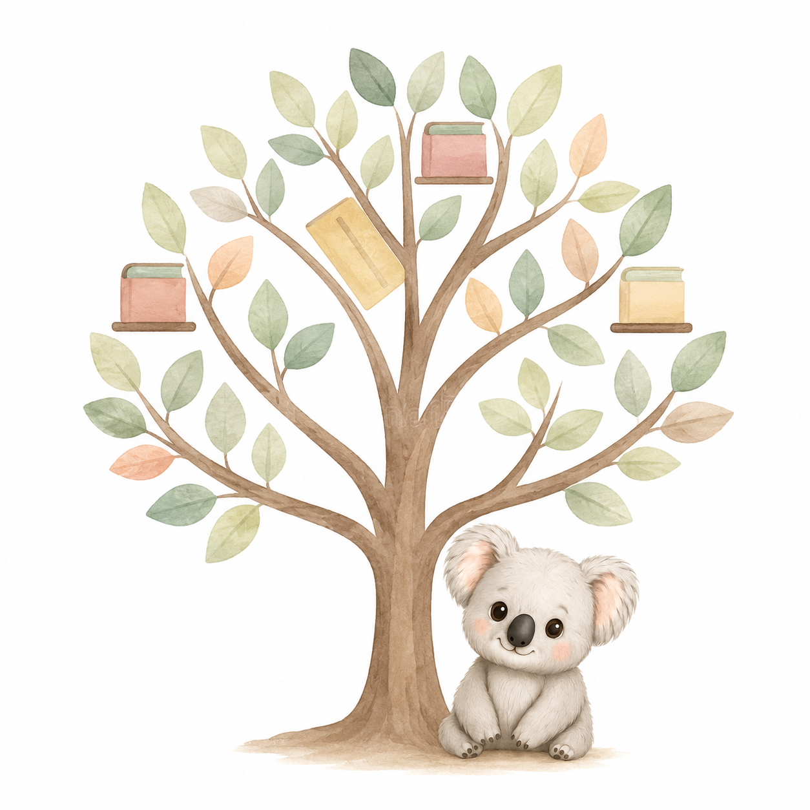

Ramas terapéuticas
En esta sección puedes conocer en detalle las diferentes modalidades y metodologías de intervención que pongo a tu disposición. Cada una de estas ramas está diseñada para adaptarse por completo a las necesidades específicas de tu familia, garantizando un entorno de apoyo cómodo, seguro y eficaz.
